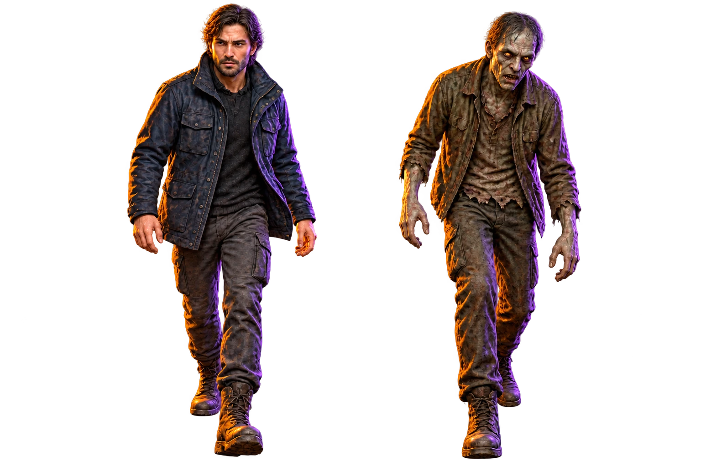

La ciudad como una red.
Hogares y espacios compartidos forman conexiones. Algunas personas conectan más grupos que otras.
Una ciudad real. Una amenaza imposible.
Un futuro que
todavía puedes cambiar.
Bienvenido al protocolo Natossi.
Imágenes satelitales reales de Manta.
Un escenario para
entender cómo una decisión
local puede cambiar toda la historia.
Explora los puntos de referencia y lleva el escenario al laboratorio.
Imágenes de archivo de Esri World Imagery; calles y referencias de OpenStreetMap. Los personajes, contactos y contagios son sintéticos. La imagen satelital no es una transmisión en vivo.
No necesitas adivinar el futuro.
Necesitas comparar lo que
podría pasar.
Hogares y espacios compartidos forman conexiones. Algunas personas conectan más grupos que otras.
Un modelo SEIR sigue cada transición. Ajusta el contagio, la eficacia y el momento de respuesta.
Compara una estrategia dirigida con actuar al azar y no intervenir. Mira promedios y variabilidad.
Es dónde las usas.

NATOSSI / ESCENARIO DE FICCIÓNPersonas que se encuentran. Un contagio que transforma cada conexión. En Natossi, la propagación cobra vida para que entiendas dónde y cuándo actuar.
Todavía sano. Puede contagiarse al entrar en contacto con una persona infecciosa. Protegerlo a tiempo puede interrumpir una cadena.
Cambia las condiciones. Pon a prueba una idea.
Descubre qué
decisiones marcan la diferencia.
Mapa: primera réplica. Las curvas y las métricas muestran promedios.
| Decisión | Contagios medios | Rango observado | Dosis usadas · media |
|---|---|---|---|
| Preparando comparación… | |||
Ejecuta el escenario para ver una recomendación basada en sus resultados.
Modelo ilustrativo sobre una población sintética. Los resultados no describen un brote real de Manta ni sustituyen decisiones sanitarias.
Explorar los supuestos
Geografía verificable. Supuestos visibles.
Resultados que
puedes reproducir.